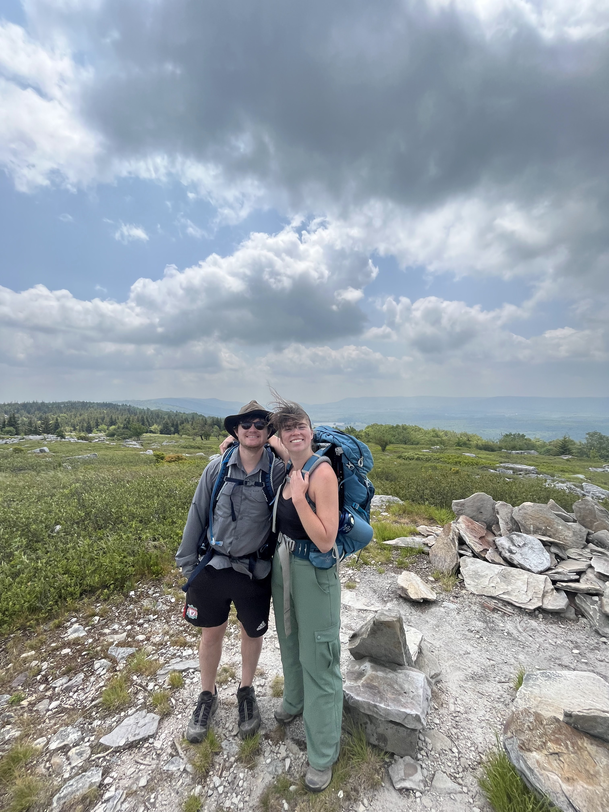

Welcome!
We are looking forward to seeing you all for our wedding on 17 December 2023. This website provides you with some important information about the day. If you have any questions, please reach out to us.
Order of events
Ceremony
Come celebrate with a beautiful view. We will have our ceremony, enjoy some champagne, and take some photographs.
When: 4:00 to 5:30 pm
Where: Blues Point Reserve, North Sydney
Reception
After the ceremony, we will head over to Enmore to enjoy a feast, hear some speeches, and drink some more!
When: 6:30 to 9:30 pm
Where: Emma’s Snack Bar, Enmore
After party
Join us just a short walk away for some dancing and even more drinks!
When: 9:30 pm to late
Where: Jacoby’s Tiki Bar, Enmore
Important information
Dress code
The dress code for the wedding and reception is cocktail attire. That being said, please make sure to wear something in which you feel glamorous, amazing, and comfortable!
We are hoping (touch wood, fingers and toes crossed) for a pleasant summer’s day. We may; however, have a very hot day or it may rain. We have contingency plans for both of these outcomes and will let you know if we need to make any adjustments.
Weather permitting, the ceremony will be held in a park. You will be standing and walking on grass.
Travelling to and from each venue
To the ceremony
We strongly recommend using public transport or catching a taxi to get to Blues Point Reserve. There is very limited parking near the park.
Closest ferry stop
McMahon’s Point
Closest train stop
North Sydney
Nicest train stop from which to walk
Milson’s Point
Closest bus stop
Blues Point Rd at Warung St
If you arrive early at Blues Point Reserve, we recommend getting a quick drink at the Blues Point Hotel. The rooftop patio is lovely (but hot!).
To the reception
Harbour cruise (…kind of)
Declan and I will be catching the ferry to Circular Quay, taking the train to Stanmore Station, and then walking the short distance to Emma’s Snack Bar. Everyone is welcome to join us!
The easiest way to travel on public transport in Sydney is using an Opal card; however, you can also tap on and off using a credit card. Please make sure to bring one of these with you to the ceremony if you want to join our (not so private) harbour cruise!
The slightly more practical option
We will also be ordering taxis to take those who would prefer to drive to the reception.
To the after party
Jacoby’s Tiki Bar is a short six-minute (450 m) walk from Emma’s Snack Bar. We will walk over after the reception.
We will also order taxis for anyone with mobility issues or tired feet. Jacoby’s has seating (including some very comfortable booths) for those who need it.
RSVP
Please RSVP by 1 November. To do this, please fill out this form.
See you soon!
